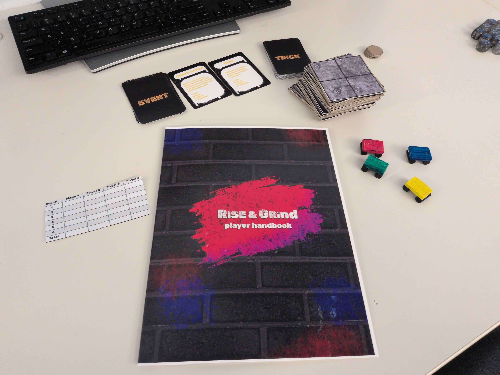
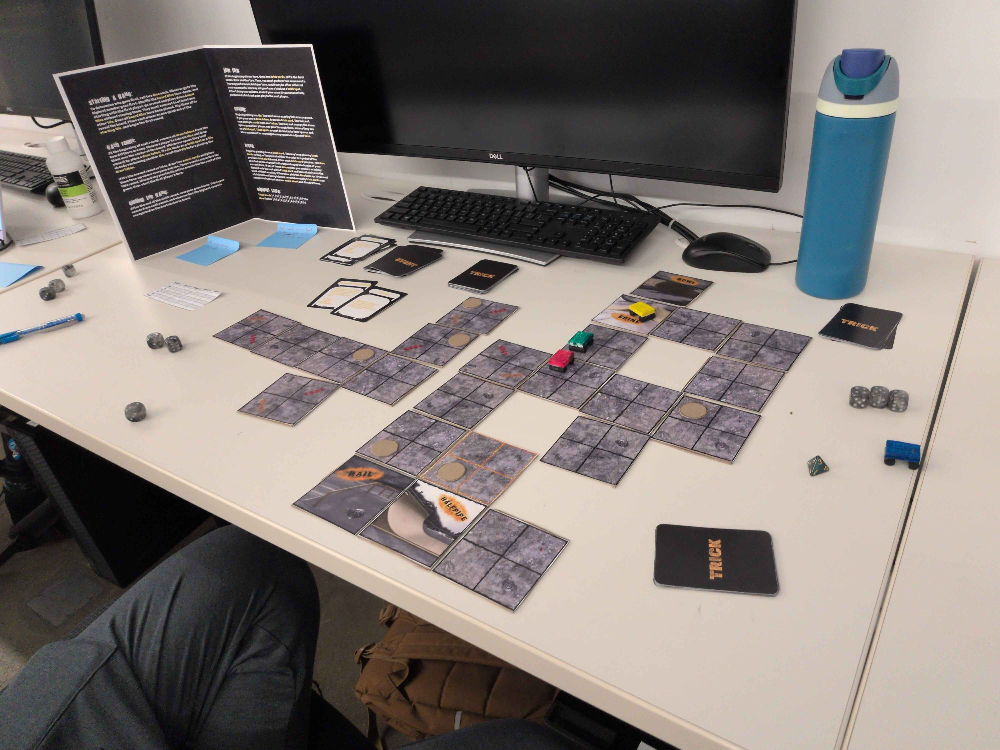

Drexel University, September 2026 - October 2026


Rise & Grind is a combo-based board game where players
build their own skatepark and then perform tricks there to
earn score. This game was a GMAP260 course project.
Lavender Vanina (that's me!) - Design, Handbook & Rules, Pieces
Jason Andersen - Design, Pieces
Lucas Galvez - Design, Cards & Events
Calvin Carter - Design, Board, Tokens